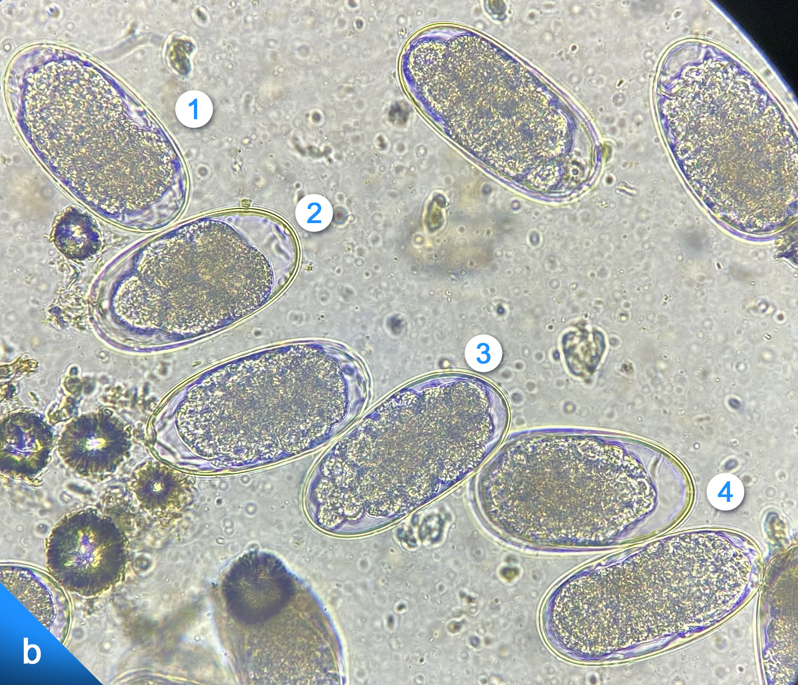

16

a) Fotomicrografía de un huevo larvado (flecha) compatible con Strongyloides westeri y dos huevos blastomerados compatibles con nematodos tipo estrongilido obtenidos de las heces de un équido en 10×.

❮
❯
b) Fotomicrografía de huevos blastomerados en diferentes tiempos de maduración:
- 1) huevo con mórula
- 2) huevo con cuatro células embrionarias
- 3) huevo con más de 20 células embrionarias o huevo en gastrulación
- 4) huevo con un embrión elongado
todos compatibles con nematodos tipo estrongilido obtenidos de las heces de un équido en 10×.